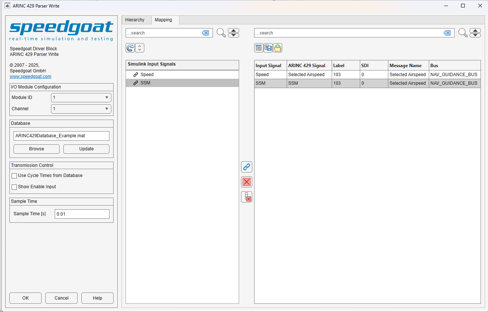

ARINC 429 Parser Write — Sends ARINC 429 words to one channel
The ARINC 429 Parser Write block consists of a masked subsystem, which adds an additional functionality layer to the existing IO682 Send block. The subsystem is dynamically populated with a set of preconfigured ARINC 429 Pack blocks, the corresponding IO682 Send blocks, preconfigured input ports, and the interconnecting lines. The ARINC 429 Parser Write block mask allows users to select which configuration file messages should be transmitted.
The ARINC 429 Parser Write block cannot be edited when linked to a custom library because the block contains instance-specific data that cannot be shared across links. The block remains editable within the library itself; changes made there are reflected in all linked instances. Additionally, the block cannot be used within subsystem models, as these are not supported.
Each Write block has a software FIFO buffer in which Tx messages are queued. When selecting the sample time of the Write block, the user must ensure that all messages can be transmitted within a single sample step and that the bus is not overloaded.
This input port is available whenever the Show Enable Input checkbox in the block mask is activated. Use this port to enable (1) or disable (0) the transmission of ARINC 429 messages during runtime. Each message may be controlled using an n-elements boolean vector, where n represents the number of messages from the configuration file that are enabled in the ARINC 429 Parser. The indexing of the messages aligns with the enabled nodes in the tree, in ascending order.
The input port expects a Simulink bus containing the signals that should be transmitted. The Mapping Tab allows you to map these signals to the ones defined in the selected database.
Selects the IO682 I/O module with which this driver block communicates. The list is populated according to the IO682 Setup blocks in the model.
Select the IO682 channel with which this driver block communicates.
Select a configuration file from your folders by clicking the browse button.
Refer to the Usage Notes for more information about the configuration file.
Use this button if the configuration file changes.
Select this option to transmit ARINC 429 messages with the cycle time defined in the selected configuration file. If disabled, ARINC 429 messages are transmitted at the selected block sample time by default.
Select this option for Enable Input Port to be available. With this port, messages can be enabled or disabled during execution.
All messages defined in the selected configuration file are displayed in the Hierarchy tab. Detailed information about the various signals is displayed when a specific message is selected.
The CycleTime message property is supported provided that all cycle times are a multiple of the Sample Time parameter. To use this feature, check the Use Cycle Times from Database checkbox. If no cycle time has been defined for a message, it defaults to the configured Sample Time.
The Hierarchy tree has a Search field available, which highlights nodes found in this tree. You can cycle through highlighted nodes using the up and down arrow buttons next to the Search button. Clear the Search field to clear the node highlighting.
This button refreshes the Hierarchy tree and the Details Table.
This button expands or collapses all nodes in the Hierarchy tree.
Allows users to enable or disable all available messages in one click.
Allows users to sort the messages either by None, Equipment, or Channel.
The Details Table shows all the information available in the configuration file for the selected node. Depending on the hierarchy level, different types of information are displayed. No actions are available for this table.
The mapping functionality allows you to map the elements of an input bus signal to the signals defined in the selected database file. On the Hierarchy tab, first select which messages are transmitted, and then switch to the Mapping tab. At this point, it is important to ensure that there is an input Simulink bus signal on the input port of the block.

The Mapping tab shows a tree view of the structure of the input Simulink bus signal on the left, and the mapping table on the right. The mapping table contains the list of signals that were previously selected in the Hierarchy tab, and an Input Signal column that shows how an element of the input Simulink bus signal maps to a corresponding database-defined signal. When no mapping is selected, the input signal in the mapping table takes the default value Ground (0). To map signals, you must select the desired input signal elements in the left-hand tree view, the corresponding row in the right-hand table, and click the arrow button to complete the mapping.
The following options are available in the Mapping tab:
Refresh button: If the input Simulink bus signal is modified, click this button to refresh the tree view
Clear Selected: The signal currently selected in the mapping table is set to the default value Ground (0)
Clear All: All signals in the mapping table are set to the default value Ground (0)
Map Button (arrow icon): Maps an input signal element to a database-defined signal. To enable the button, both a signal from the tree view and a row from the table on the right must be selected. Once a signal is mapped, the signal's icon in the tree view changes to a link
Configure Table: Opens a dialog window where you can use checkboxes to configure the columns visible in the mapping table
Save to File: Saves the mapping table to a file, where the file name and the file type are selectable in a dialog box. The file types currently supported are .csv and .mat
Load from File: Invokes a file selection dialog to load the mapping table from a file. The file types currently supported are .csv and .mat. The table layout of the loaded file must match the layout of the file created when you click the Save to File button. To ensure that the mapping table is valid, all the mapped messages must be enabled and all the input signals must be available in the connected input Simulink bus signal. Disabled messages are not loaded into the mapping table (indicated by a warning message). The input signals unavailable are displayed as invalid in the mapping table.